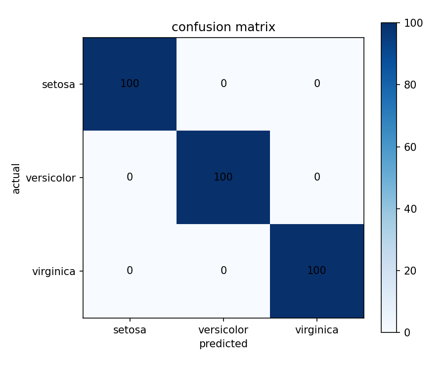
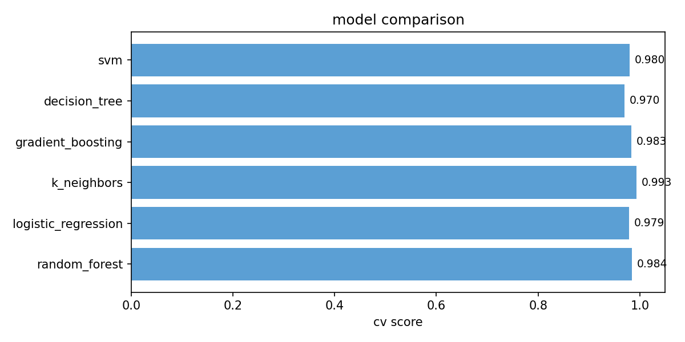
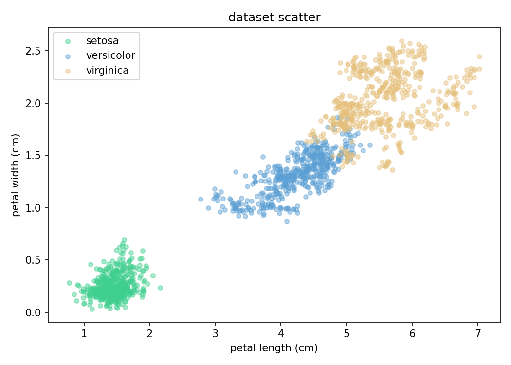
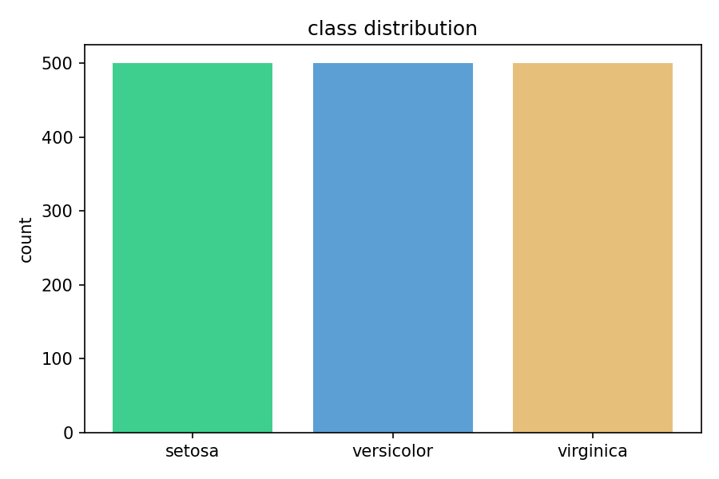

| metric | value |
|---|---|
| test accuracy | 100.0% |
| val accuracy | 100.0% |
| f1 macro | 100.0% |
| original samples | 150 |
| expanded samples | 1500 |
| train / val / test | 900 / 300 / 300 |
| dataset | samples | test accuracy |
|---|---|---|
| original only | 150 | 93.3% |
| expanded | 1500 | 100.0% |
| model | cv mean | cv std |
|---|---|---|
| random_forest | 98.4% | ±1.0% |
| logistic_regression | 97.9% | ±1.2% |
| k_neighbors | 99.3% | ±0.7% |
| gradient_boosting | 98.3% | ±1.2% |
| decision_tree | 97.0% | ±0.6% |
| svm | 98.0% | ±0.9% |
| feature | score |
|---|---|
| sepal length (cm) | 0.5208 |
| sepal width (cm) | 0.3093 |
| petal length (cm) | 0.9886 |
| petal width (cm) | 0.9862 |
confusion matrix

model comparison

dataset scatter

class distribution
